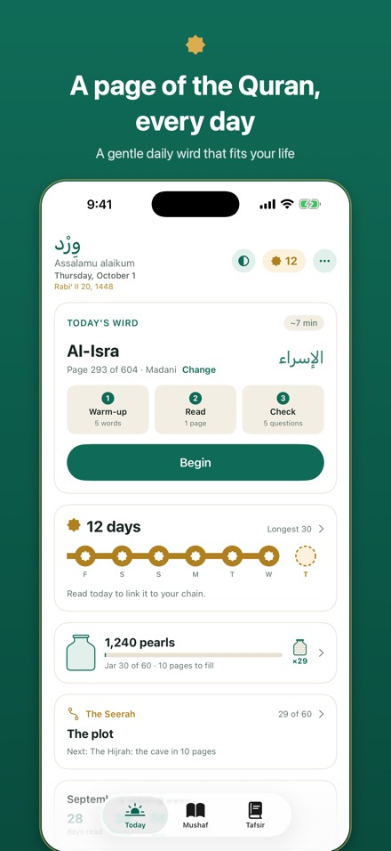
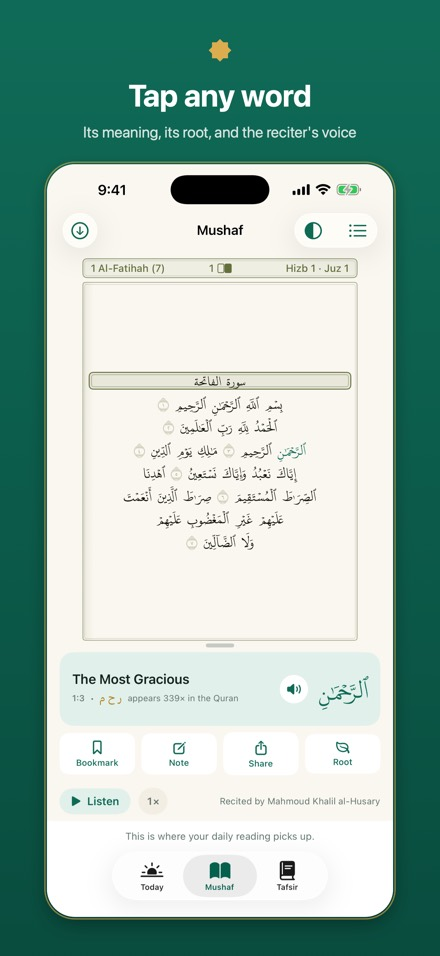
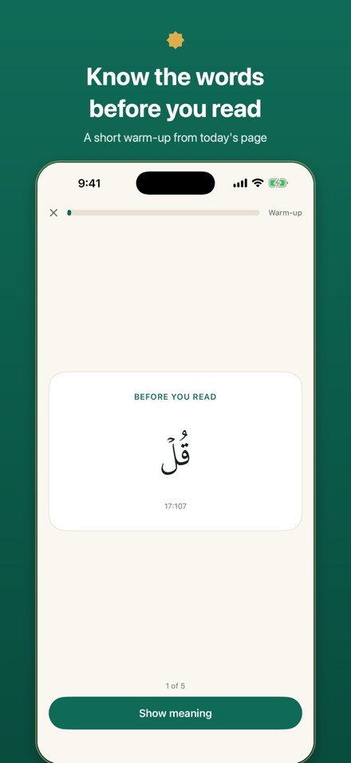
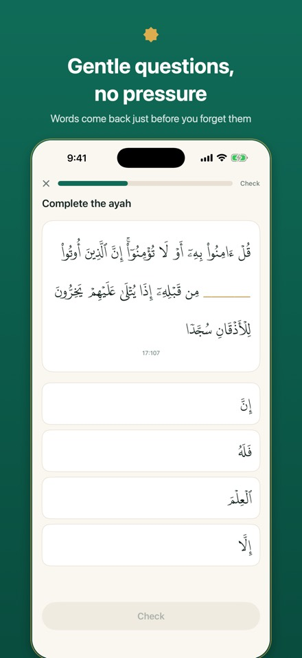
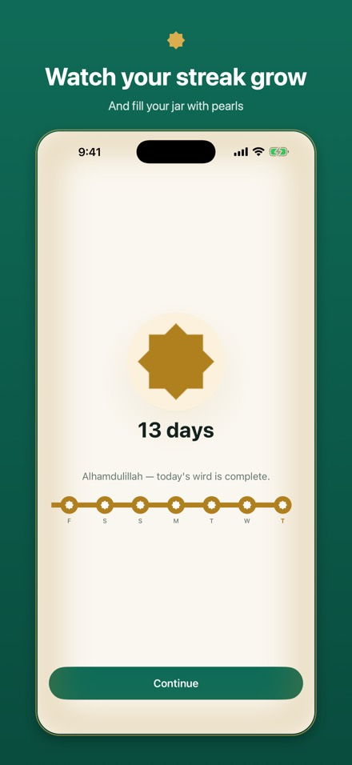
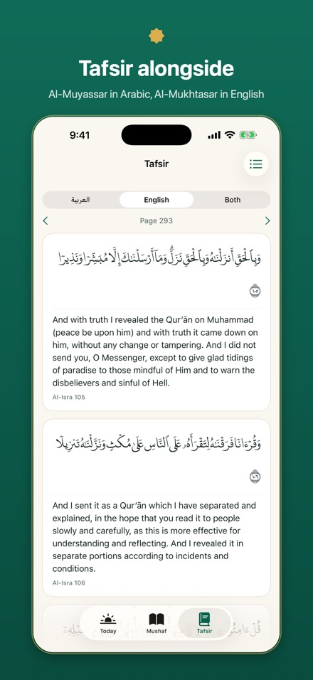
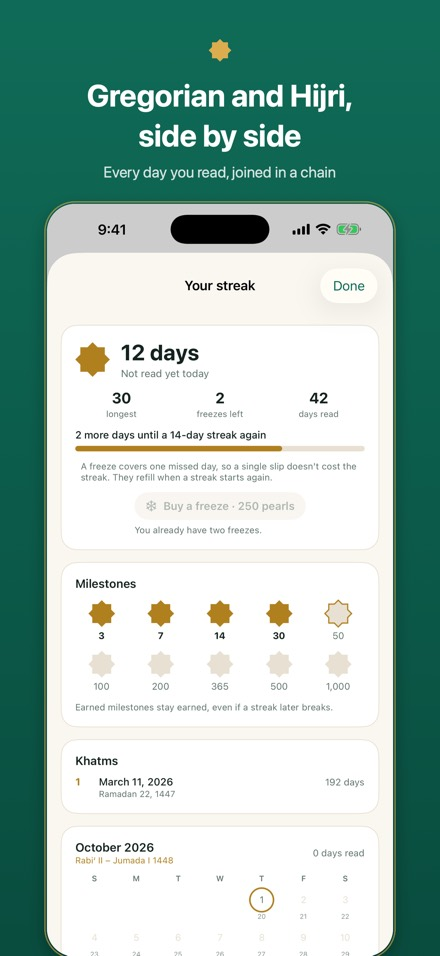
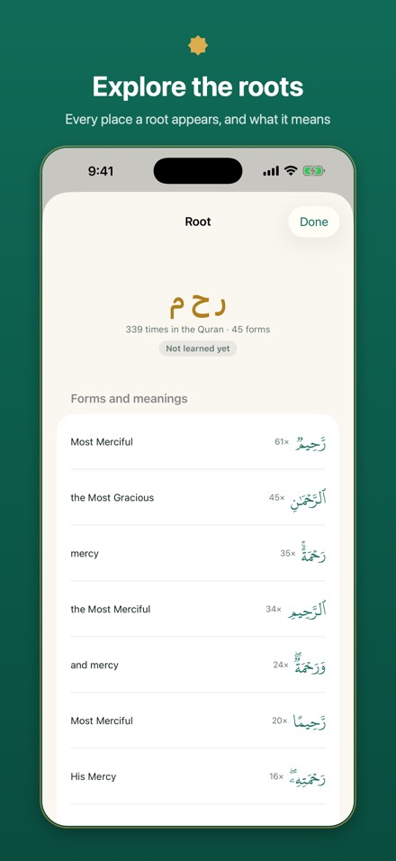
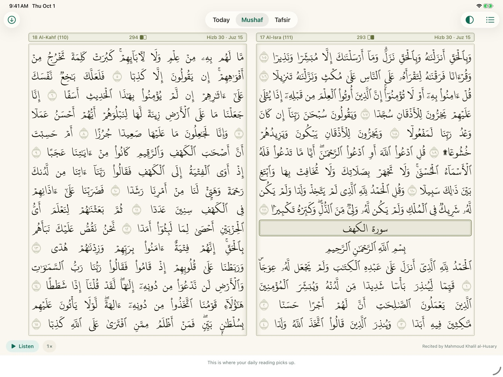
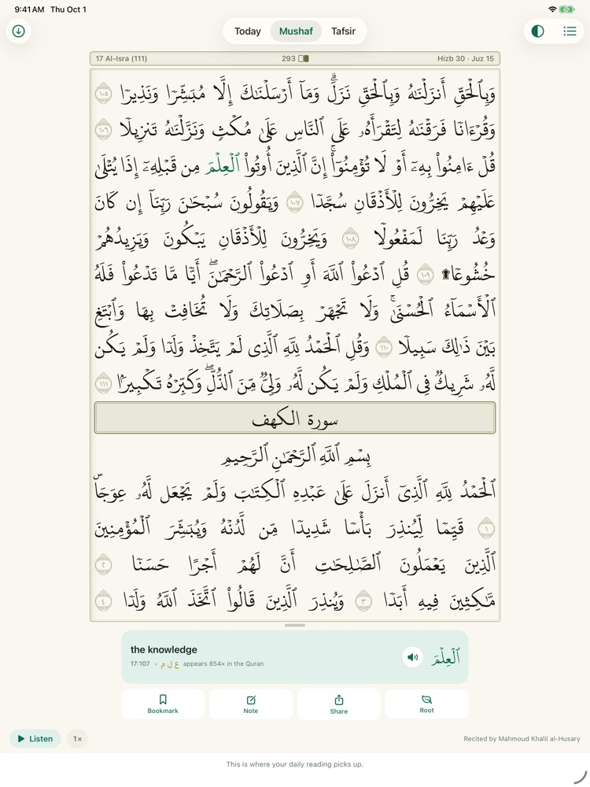

Each day
Three short steps, then you’re done.
1Warm up
Five words from today’s page, each with its meaning, root and transliteration.
2Read
The page exactly as printed in the 604-page Madinah mushaf. Tap any word for its meaning, or listen as each word lights up with the reciter.
3Check
A few gentle questions. A wrong answer costs nothing. Words come back for review just before you would forget them.








What’s inside
Everything for a daily wird, nothing in the way.
Keep going
- A streak that grows as a chain of days, with freezes for the days life gets in the way.
- Pearls fill a jar as you read: a quiet marker of effort, not a score.
- A journey through the Seerah that opens a new stop every half juz.
- A celebration with a du’a when you complete a khatm.
Understand
- Tap any word for its meaning, its root and how often it appears.
- Tafsir beside the page: al-Muyassar in Arabic and Al-Mukhtasar in English.
- Follow a root through every form and every ayah it appears in.
- Search by surah, Arabic word, or English meaning.
Listen
- Mahmoud Khalil al-Husary, Mishari Rashid al-Afasy or Muhammad Siddiq al-Minshawi.
- Each word lights up as it is recited.
- Offline: your next week is saved on Wi‑Fi, or download any juz.
- Keeps playing, page after page, with the screen locked.
Your way
- 1 to 20 pages a day, and reminders at the times you choose.
- English or Arabic, switched inside the app.
- Tasbīʿ: the whole Quran every week, in its seven traditional parts.
- iCloud sync between iPhone and iPad, a widget, and private family circles.
On iPad
Turn it sideways, and the mushaf opens like a book.
Wird runs on iPad as well as iPhone, with the same reading, streak and settings, kept in step through iCloud.


Two pages in landscape
Hold the iPad sideways and the Mushaf tab shows a full spread: the odd page on the right, the even page on the left, just like print. Swipe to turn a whole spread at a time.
One page in portrait
Upright, you get a single page in the shape of the printed mushaf, with larger type than on iPhone.
Any way you hold it
Every orientation works, and so does Split View, so Wird can sit beside your notes or another app.
Same reading everywhere
Start on your iPhone and finish on your iPad. Your place, streak and pearls sync through your own iCloud, with no sign-in.
Our promises
Built around worship, not engagement.
No hearts, no lives, no buzzers. The Quran is never behind a paywall or a failure screen.
Family circles show who read today and their streak, never a ranking.
Every word of the Quran is checked against Tanzil’s verified text before a version ships.
No account, no ads, no tracking. Wird collects no data at all.
From readers
What people say
Wird is in testing now. Reviews from readers will appear here after launch.
Using Wird already? We’d love to hear how it’s going: share your experience. Tell us if we may quote you, and how you’d like to be named.
Questions
Common questions
Is Wird free?
Yes. No ads, no subscriptions, no in-app purchases.
Is there an Android version?
Not yet. Wird launches on iPhone and iPad first. An Android version is planned after that; this page will say when it’s ready.
Does it work on iPad?
Yes. In landscape the Mushaf shows two pages side by side, like an open book; in portrait, one large page. Your reading syncs with your iPhone through iCloud. More about iPad
Do I need to know Arabic?
No. Every warm-up word has its English meaning and its transliteration in Latin letters, any word on the page can be tapped for its meaning, and the English tafsir sits beside the page.
What happens if I answer wrong?
Nothing. There are no hearts or lives, and a wrong answer never stops you reading. The word simply comes back for review sooner.
I missed a day. Is my streak gone?
Not necessarily. Freezes cover missed days automatically. You can hold up to two, and buy more with 250 pearls each. After a missed day the app offers, never requires, a few extra pages to catch up.
How much do I read each day?
One page by default, about seven minutes with the warm-up and questions. Choose anywhere from 1 to 20 pages in ⋯ → Pages per day; the app shows how many days your khatm will take.
Can I just read, without the questions?
Yes. Turn off ⋯ → Warm-up and questions. Your streak, pearls and journey still count.
Can I listen without internet?
Yes. Your next week of reading is saved automatically on Wi‑Fi, and you can download any juz, or the whole Quran, from Mushaf → Offline audio.
Does my reading sync between iPhone and iPad?
Yes, through your own private iCloud storage. There’s no sign-in; it’s on by default (⋯ → iCloud sync).
What are family circles?
An invite-only group, shared through iCloud. Members see each other’s name, streak and whether they’ve read today. Nothing else is shared, and no one is ranked.
How do I change the language, reciter or reminders?
Tap ⋯ on the Today screen. Language, appearance, reciter, pages per day and reminders are all there.
Where does the text come from?
The Quran text is from Tanzil, checked word by word. The page layout follows the 604-page Madinah mushaf. Tafsir, word meanings and roots come from QUL by Tarteel, and recitation audio from Islamic Network.
I found a mistake.
Please tell us: email wird.app.support@gmail.com with the surah and ayah, or the page number, and what looks wrong.
Support
Get help
Questions, a word or page that looks wrong, or an idea: wird.app.support@gmail.com.
Privacy
Wird collects no data. Your reading stays on your devices and in your own iCloud. Privacy policy
Quran text: Tanzil (CC BY 3.0). Script: DigitalKhatt. Page layout, word meanings (English, and Arabic from al-Muyassar fi Gharib al-Quran), roots and transliteration: QUL by Tarteel. Recitation audio: Islamic Network.